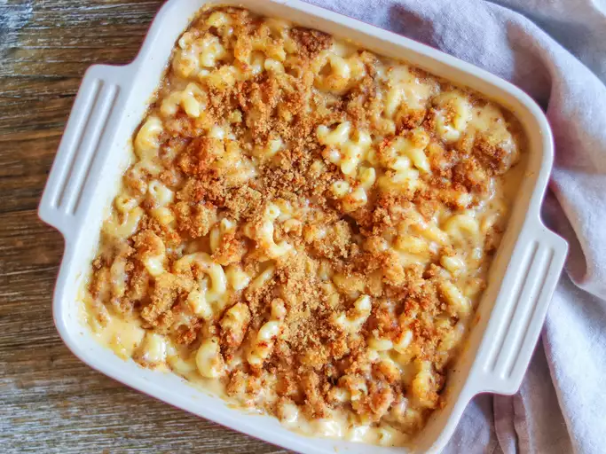

Mac And Cheese
Disclaimer: all of the contents provided are obtained from
here.
None of the contents provided are original.

Image submitted by fabeveryday
(02/16/2025).
Description
Skip the boxed stuff and make homemade mac and cheese tonight.
This from-scratch macaroni and cheese recipe will become a
staple in your dinner rotation.
Ingredients
- Macaroni
- Butter and flour
- Mlilk
- Cheese
- Seasonings (salt, pepper and paprika)
- Bread crumbs
Steps
- Boil the noodles, drain, and transfer to a prepared baking dish.
- Make the cheese sauce, pour the sauce over the noodles, and stir.
- Make the topping, spread it over macaroni and cheese,
and sprinkle with paprika.
- Bake the mac and cheese until the topping is golden brown.
Home